麻酔カルテ 使い方ガイド
← ガイド一覧へ
獣医師・動物看護師向け ｜ 2026年11月18日版 ｜ 荻窪ツイン動物病院
30秒まとめ
手術・麻酔の予定、導入薬の準備、麻酔の記録をつけるアプリです。
VetLink の中にあった「手術・麻酔」を、独立したアプリにしました。予約から
本日の麻酔が自動で並び、カードから
導入準備（体重から液量を計算）→
麻酔カルテ（モニター・薬・輸液/CRI・手術イベントを1本の時間の図に）→
麻酔記録の印刷・
入院カルテに送るまで、このアプリだけで進みます。
獣医師・動物看護師が使う画面です
緑 = 自動（予約から読み込み）
📅 2026年11月21日（土）の朝から使います。
- 11月20日（金）までは、今までどおり VetLink で手術・麻酔をつけてください。
- 11月21日から、手術・麻酔の予定・導入薬の準備・麻酔の記録・麻酔の薬の設定は全部この麻酔カルテで行います。
- 同意書と麻酔前注意事項は、今までどおり「院内書類」（旧 VetLink）で作ります（院内書類のガイド）。麻酔カルテのカードには、その状態が札で出ます。
- VetLink の過去の手術・麻酔の記録は、このアプリへ移してあります（「VetLink から移した記録」の札）。見るだけで、直したり記録を足したりはできません。紙の印刷はできます。
1. アプリを開く
1.1 合言葉
初めて開くと合言葉を聞かれます。入院カルテと同じ合言葉です。一度入れると、その端末は30日覚えています。
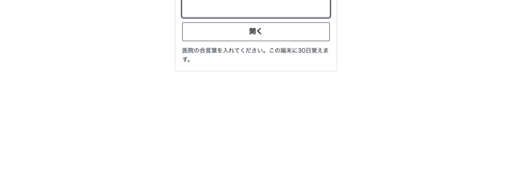
合言葉の画面
1.2 記入者
右上の「記入者」で自分の名前を選んでください。その日のあいだ端末が覚えます。記入者を選んでいないと、麻酔カルテの記録を書く・直す・消すことはできません（だれが記録したかを残すためです）。
iPad ではホーム画面に追加すると、アプリのように開けます。上のメニューの「薬の設定」「緊急薬」「設定」「ここが不便」は、どの画面からでも押せます。
2. 全体の流れ
2.1 1件の手術・麻酔の流れ
予約から「本日の麻酔」に並ぶ歯科処置・歯科処置（立会）・避妊去勢・手術の予約が自動で出ます。
↓
導入準備当日体重を入れて、導入薬を選ぶ → 準備する液量が出る → 準備したら「準備済み」
↓
麻酔カルテ「麻酔記録開始」→ モニター・薬剤・輸液/CRI・手術イベントを記録 →「麻酔記録終了」
↓
術後管理ICU帰室 → 体温チェック → 術後管理終了
↓
麻酔記録を印刷・入院カルテに送る
2.2 画面の全体像
| 画面 | すること |
|---|
| 本日の麻酔 | その日の手術・麻酔のカード。状態・導入薬・同意書の札を見て、次のボタンを押す（→ 3） |
| 予定の登録・直す | 予約に無い手術を足す・担当や時刻を直す・当日体重（→ 4） |
| 導入準備 | 1頭ずつ、導入薬を選んで液量を出す（→ 5） |
| まとめて薬を準備 | その日の何頭分かを、薬ごとにまとめて準備する（→ 6） |
| 麻酔カルテ | 麻酔中の記録・時間の図・術後管理・印刷・入院カルテに送る（→ 7） |
| 緊急薬の計算 | 麻酔カルテの「緊急薬」から。体重から量を出し、投薬記録に入れる（→ 8） |
| 薬の設定・緊急薬の設定 | 導入準備・麻酔カルテ・緊急薬の計算で使う薬と用量（→ 9） |
3. 本日の麻酔
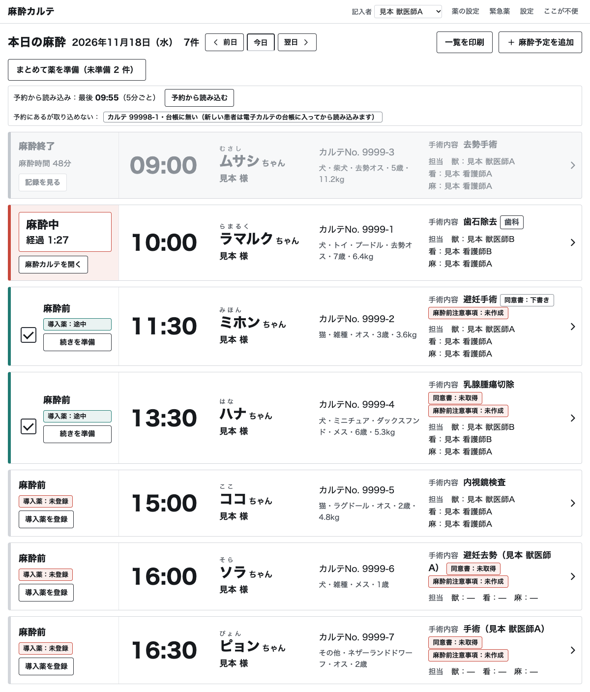
本日の麻酔（画面は見本の患者です）
- その日の手術・麻酔が時刻の順にカードで並びます。◀ 前日／今日／翌日 ▶で日を変えられます。カードを押すと麻酔カルテが開きます。
- カードの左に状態が出ます：麻酔前／麻酔中（経過時間が進みます）／麻酔終了（麻酔時間）。
3.1 導入薬の札とボタン
麻酔前のカードには導入薬の札が出て、次にすることのボタンが1つだけ出ます。
| 札 | ボタン |
|---|
| 導入薬：未登録 | 「導入薬を登録」→ 導入準備へ |
| 導入薬：未準備 | 「導入薬を準備」→ 導入準備へ |
| 導入薬：途中 | 「続きを準備」→ 導入準備へ |
| 導入薬：準備済み ✓ | 「麻酔カルテへ」 |
3.2 同意書・麻酔前注意事項の札
- 院内書類（旧 VetLink）の状態を読んで、手術内容の横に札を出します：同意書：未取得 同意書：下書き 麻酔前注意事項：未作成。
- 署名が済んだものは札が消えます。歯科の予定は歯科の同意書、それ以外は麻酔の同意書を見ています。
- 同意書と麻酔前注意事項を作るのは院内書類です（麻酔カルテでは作りません）。
3.3 予約から読み込む・印刷・まとめて準備
- 予約から自動で読み込みます（間隔と最後に読んだ時刻は上の帯に出ます）。今すぐ反映したいときは「予約から読み込む」を押します（見ている日だけ）。
- 帯に「予約にあるが取り込めない：カルテ ○○・台帳に無い」と出たら、まだ電子カルテの台帳に無い子です。台帳に入ると次の読み込みで並びます。
- 予約に無い手術は「＋ 麻酔予定を追加」から足せます（→ 4）。
- 「一覧を印刷」＝その日の麻酔の一覧（A4 横）。印刷の画面で「横」を選びます。
- 「まとめて薬を準備」＝未準備・途中の子をまとめて準備します（→ 6）。カードの左のチェックを外した子は入りません。
4. 予定の登録・直す
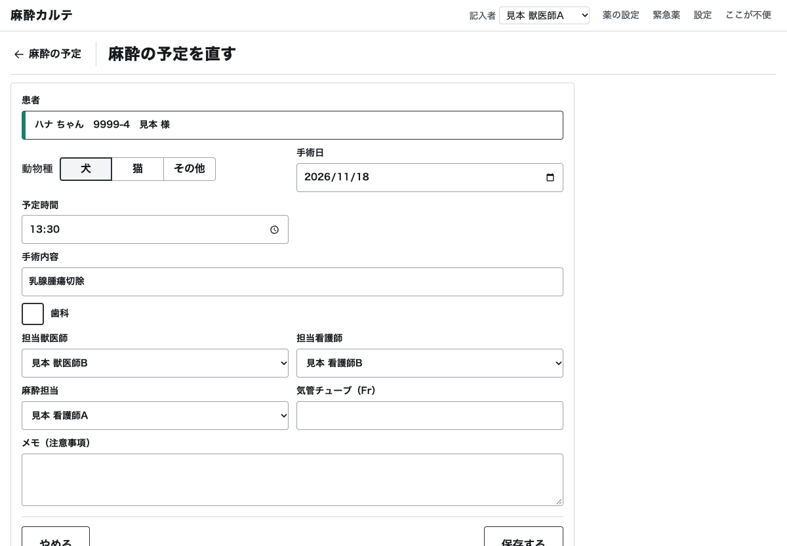
麻酔の予定を直す（画面は見本です）
- 登録：「＋ 麻酔予定を追加」→ カルテ番号・名前・飼い主で患者を探して選ぶ → 手術日・時刻・手術内容・担当を入れて「登録する」。
- 動物種は 犬／猫／その他から選びます。患者を選ぶと台帳の種が入ります（犬・猫以外は「その他」）。緊急薬の計算は、この動物種で出す薬を絞ります。
- 担当は担当獣医師・担当看護師・麻酔担当の3人。歯科のチェック・気管チューブ（Fr）・メモ（注意事項）も入れられます。
- 直す：麻酔カルテの上の「予定を直す」で予定の画面が開きます。「直す」で上の画面、「消す」は2回押すと消えます。
- 当日体重：予定の画面の「当日体重」に入れて「保存」。「アーミクスから最新を取得」を押すと、アーミクスの直近の体重が欄に入ります（保存は自分で押します。受付PCが動いている時間だけ）。患者の台帳の体重は書き換えません。
5. 導入準備
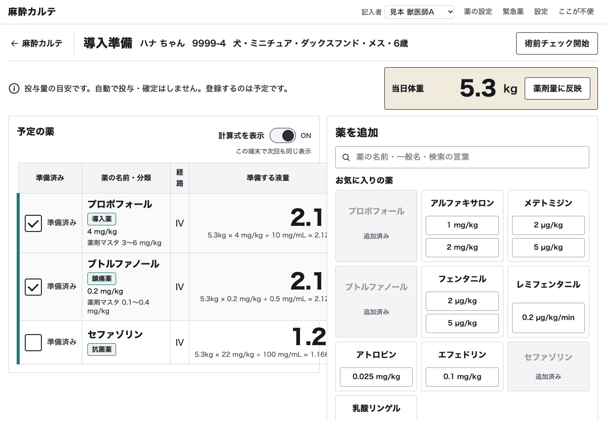
導入準備（計算式を表示 ON・画面は見本です）
- 右上の当日体重を入れます（欄を離れると保存）。体重を変えたら「薬剤量に反映」で、予定の薬の量を全部計算し直します。
- 右の「お気に入りの薬」で用量のボタンを押して選び、「選んだ薬を追加」。決まった用量・経路で入ります。追加済みの薬は選べません。
- お気に入りに無い薬・用量を変えたい薬は「1剤ずつ詳しく追加」から。濃度・用量・経路を選ぶと、その場で計算します。設定に無い薬も手で入れられます。
- 左の表に準備する液量が大きく出ます。液量を押すと直せます（手で直した量は印が付きます）。
- 準備したら「準備済み」にチェック。本日の麻酔の札が 未準備 → 途中 → 準備済み に変わります。
- 「計算式を表示」の ON／OFF は、その端末が覚えます（次に開いても同じ表示。まとめて準備も同じ）。
- 用量の下に小さく「薬剤マスタ 3〜6 mg/kg」のように、院内の共通薬剤マスタで承認された範囲が出ます。外れているときは薬剤マスタの範囲外の札が出ます。量は自動では変えません。
- 液量の表示の決まり：1.0 mL 以上は小数第一位（例 2.1 mL）、1.0 mL 未満は小数第二位（例 0.56 mL）まで出します。
出る量は投与量の目安です。自動で投与・確定はしません。準備の前に、体重・濃度・量を必ず確かめてください。
6. まとめて薬を準備
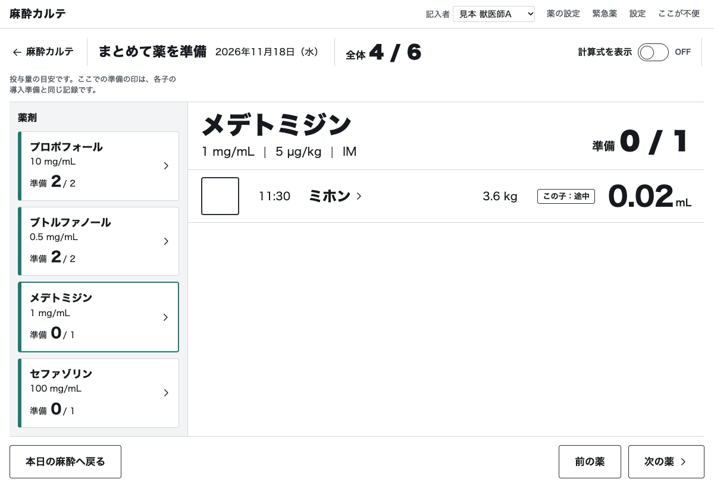
まとめて薬を準備（画面は見本です）
- 本日の麻酔の「まとめて薬を準備」から開きます。1つの薬ずつ、その薬を使う子が並びます。
- 左の薬剤の一覧で薬を選ぶか、下の「前の薬」「次の薬」で移ります。各薬に「準備 2 / 2」のように数が出ます。
- 行の左の四角を押すと準備済みになります。各子の導入準備と同じ記録です（どちらで付けても同じ）。
- 行の札はその子の全部の薬の進み具合です：この子：未準備／この子：途中／この子：準備済み ✓。名前を押すとその子の導入準備が開きます。
7. 麻酔カルテ
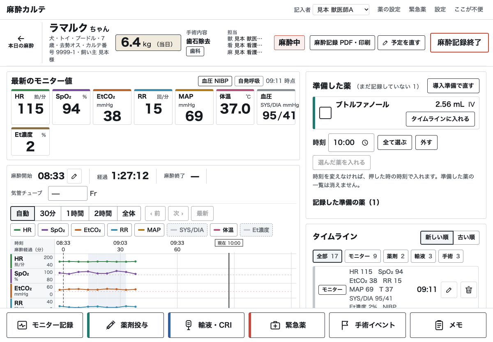
麻酔カルテ（麻酔中・画面は見本です）
7.1 上の帯と、始める・終える
- 上に患者・体重（当日）・手術内容・担当・状態が出ます。
- 「麻酔記録開始」を押すと麻酔が始まり、経過時間が進みます。終わったら「麻酔記録終了」（確かめが出ます）。
- 麻酔開始・麻酔終了の時刻は、時刻の横の ✎ で直せます（少し待つと自動で保存・麻酔時間も計算し直し）。気管チューブ（Fr）も入れるだけで保存されます。
- 左上の最新のモニター値は、目安を外れると薄い朱の地と「低め／高め」の札が出ます。
7.2 1本の時間の図
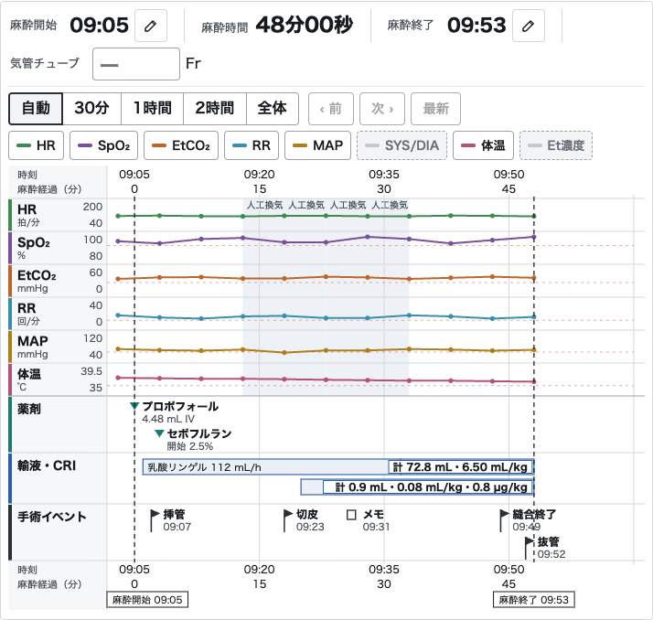
モニターの項目・薬剤・輸液/CRI・手術イベントが同じ時間軸に並びます
- HR・SpO₂・EtCO₂・RR・MAP・体温などの段と、薬剤・輸液/CRI・手術イベントの段が1本の時間軸に並びます。上下に時刻と麻酔経過（分）、「麻酔開始」「現在」の線が出ます。人工換気 ON の間は帯で出ます。
- はじめは「自動」：麻酔開始を左端にして、経過に合わせて 30分 → 1時間 → 2時間 → 全体 と広がります。30分／1時間／2時間／全体を押すとその幅で止まり、‹ 前・次 ›・最新で動かせます。
- 項目のボタン（HR・SpO₂ …）で段を出す／隠す。選んだ表示は端末が覚えます。図を触ると、その時刻のいちばん近い値や印の中身が出ます。
- 輸液・CRI の帯の右端に、名前ごとの計（mL・mL/kg・µg/kg）が出ます。麻酔終了の前は「計（暫定）」です。
7.3 準備した薬をタイムラインへ
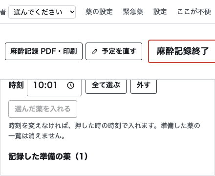
- 右上の「準備した薬」に、導入準備の薬のうちまだ記録していない薬が出ます。
- 1つずつ「タイムラインに入れる」か、チェックして「選んだ薬を入れる」。時刻を変えなければ押した時の時刻で入ります（時刻の欄を変えると、その時刻で入ります）。
- 記録した薬は「記録した準備の薬」に移ります。もう一度入れるときは確かめが出ます。
7.4 下の6つのボタンで記録する
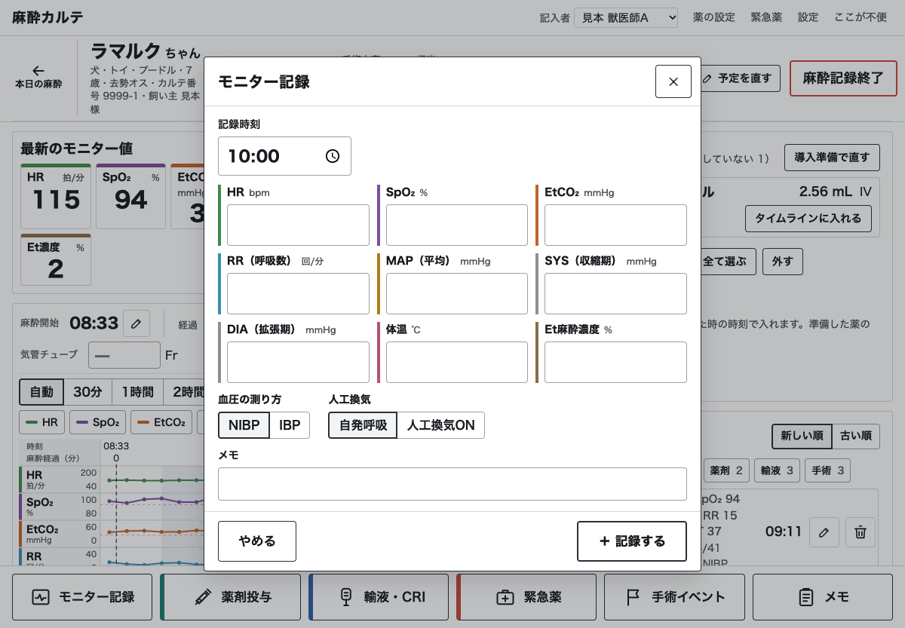
モニター記録（画面は見本です）
| ボタン | 入れるもの |
|---|
| モニター記録 | HR・SpO₂・EtCO₂・RR・MAP・SYS・DIA・体温・Et麻酔濃度、血圧の測り方（NIBP／IBP）、人工換気（自発呼吸／人工換気ON）、メモ。測り方と換気は前の記録を引き継ぎます。 |
| 薬剤投与 | 薬・量・経路。薬用量計算の補助も使えます。 |
| 輸液・CRI | 輸液の名前・変更前と変更後の流量・CRI の調製濃度（µg/kg/min は自動で計算）。 |
| 緊急薬 | 緊急薬の計算（→ 8）。 |
| 手術イベント | 挿管・切皮・抜管など（よく使う／軟部外科／歯科のボタン、または自由に入力）。 |
| メモ | そのときのメモ（時間の図に四角の印で出ます）。 |
iPad では数字の欄を押すと専用のテンキーが出ます。入力の途中で閉じようとすると「入力内容を破棄しますか？」と確かめます。
7.5 タイムライン（直す・消す・絞り込み）
- 右のタイムラインに記録が時刻の順で並びます（新しい順／古い順）。
- 全部／モニター／薬剤／輸液／手術で絞り込めます。選んだ絞り込みは端末が覚えます。
- 各行の ✎ で直す、🗑 で消す（確かめが出ます）。
- 別の端末で記録が足されると「新しい記録があります」と出ます。「最新の記録を読み込む」を押したときだけ画面が変わります。
7.6 術後管理
- 麻酔が終わったら下の「ICU帰室を記録」。
- 帰室後は「体温チェックを足す」で体温（とメモ）を記録します。
- 終わったら「術後管理終了」で状態が「完了」になります。
7.7 麻酔記録の印刷・入院カルテに送る
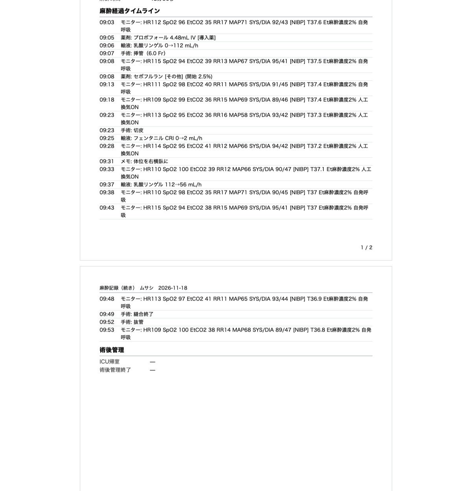
麻酔記録（A4 縦・見本）
- 上の「麻酔記録 PDF・印刷」で紙の見本が開きます。「印刷の画面を開く」で印刷（「PDF に保存」もできます）。「両面で印刷（プリンターへ直接）」が出ているときは、それを押すと両面でそのまま印刷されます。
- 紙には患者・手術情報、麻酔サマリ、麻酔経過タイムライン、術後管理が載ります（時間の図・CRI の計・予定の薬は載りません）。
- 「入院カルテに送る」：手術・麻酔の時刻・使った薬・点滴/CRI・血圧・体温を入院カルテへ送ります。押したときだけ送り、送り直すと新しい中身に置き換わります。「送りました（入院カルテの治療シートに出ます）」と出たら完了です。入院の登録がまだなら、登録すると出ます。
8. 緊急薬の計算
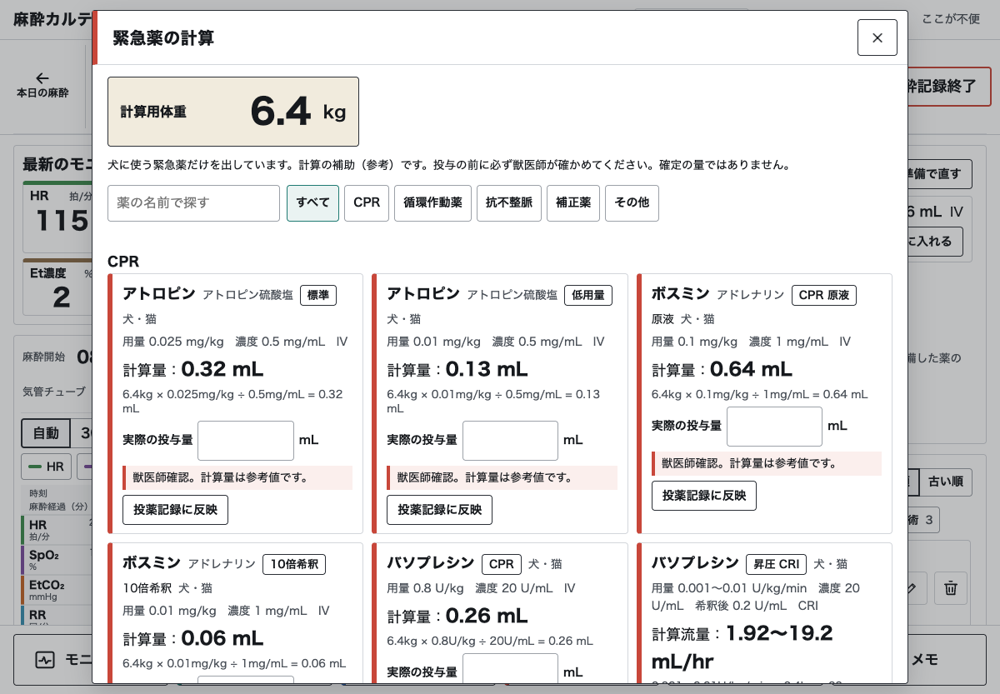
緊急薬の計算（画面は見本です）
- 麻酔カルテの下の「緊急薬」で開きます。計算用体重（当日体重が入っています）から、各薬の計算量（mL）や流量（mL/hr）が出ます。
- 予定の動物種で絞ります（犬なら犬に使う薬だけ・その他なら全部）。薬の名前で探す・分類（CPR／循環作動薬／抗不整脈／補正薬／その他）でも絞れます。
- 実際の投与量を入れると、mg/kg などに戻した値と、範囲の内か外か（上限を超えています 等）が出ます。
- 「投薬記録に反映」で、今の時刻の薬剤投与としてタイムラインに入ります。CRI の薬は、続けて輸液・CRI の入力が開きます。
計算の補助（参考）です。投与の前に必ず獣医師が確かめてください。確定の量ではありません。
9. 薬の設定・緊急薬の設定
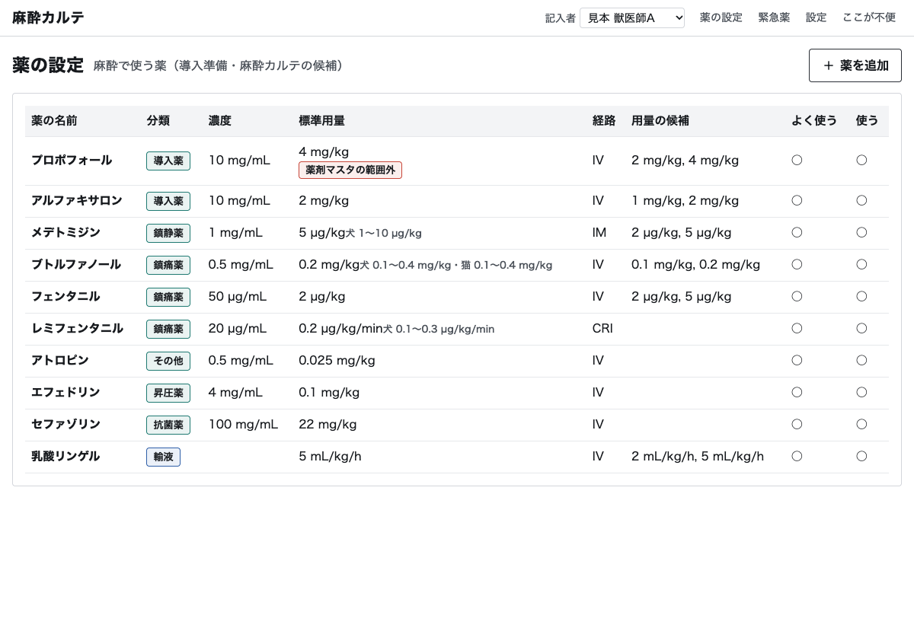
薬の設定（値は見本です）
- 薬の設定（上のメニュー）＝導入準備と麻酔カルテで使う薬。行を押すと直せます。名前・分類・濃度・標準用量・経路・用量の候補・経路の候補・一般名・検索の言葉・注意メモ、よく使う薬（導入準備の「お気に入りの薬」に出る）・使う（外すと候補に出ない）。
- 薬剤マスタの成分を結ぶと、承認済みの用量の範囲が出て、標準用量や候補が範囲の外なら薬剤マスタの範囲外と知らせます（量は変えません）。
- 緊急薬の設定（上のメニュー「緊急薬」）＝緊急薬の計算で使う薬。ふだんは薬の名前・分類・用量・濃度・経路・メモと計算の方法（1回量／持続（CRI）／調製して持続／メモだけ）だけ。一般名・希釈後の濃度・丸め・対象動物などは「詳しい設定」の中です。使わない薬は消さずに「表示する」を外します。
薬の濃度・用量は医院で決めた値です。変えるときは獣医師が確かめてから保存してください。
10. 「ここが不便」を送る
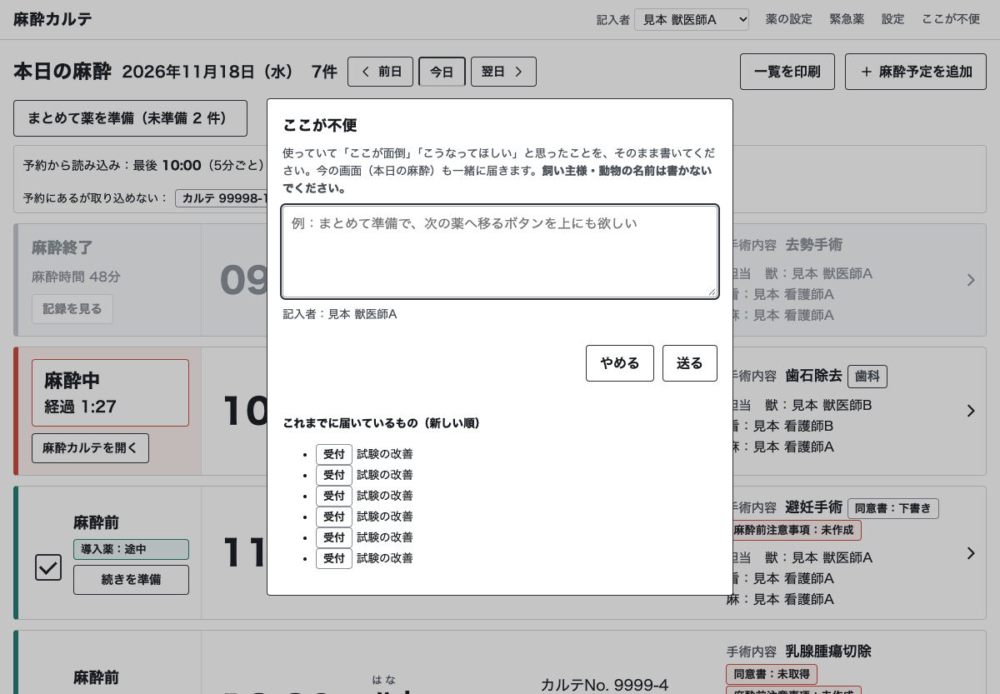
「ここが不便」の入力（画面は見本です）
- 右上の「ここが不便」から、使いにくい所をそのまま書いて「送る」。今の画面の名前が一緒に届きます。
- 飼い主様・動物の名前は書かないでください。
- 下に、これまでに届いているものと状態（受付・作業中・反映済み など）が出ます。直ったら送った方へ LINE WORKS でお知らせします。
11. よくある質問・困ったとき
| こんなとき | こうしてください |
|---|
| 合言葉を聞かれた | 入院カルテと同じ合言葉です。30日たつと、もう一度聞かれます。 |
| 11/20 までの手術はどちらで？ | 11月20日（金）までは VetLink で記録してください。11月21日（土）の朝からこのアプリです。 |
| 記録しようとすると「記入者を選んでから」と出る | 右上の「記入者」で自分の名前を選んでください（その日のあいだ覚えます）。 |
| 手術の予約が本日の麻酔に出てこない | 予約のメニューが 歯科処置・歯科処置（立会）・避妊去勢・手術 かを確かめ、「予約から読み込む」を押してください。帯に「台帳に無い」と出た子は、電子カルテの台帳に入ってからです。急ぐときは「＋ 麻酔予定を追加」。 |
| 同意書の札が消えない | 院内書類（旧 VetLink）で署名まで済んでいるかを確かめてください。札は少し遅れて変わることがあります（画面を開き直すと読み直します）。 |
| VetLink の頃の記録を見たい | このアプリに移してあります。本日の麻酔で日を戻すとカードが出ます（「VetLink から移した記録」の札・見るだけ）。 |
| 「別の端末でこの○○が直されていました」と出た | 別の端末で同じ記録が直されています。「読み直す」を押してから、もう一度入れてください（古い内容で上書きしないための止めです）。 |
| 体重を変えたのに量が変わらない | 導入準備の「薬剤量に反映」を押すと、その体重で量を計算し直します。 |
| 入院カルテに出ない | 麻酔カルテの「入院カルテに送る」を押したかを確かめてください。入院の登録がまだなら、登録すると出ます。診察券番号の無い仮患者は送れません。 |
| 使いにくい・こうしてほしい | 右上の「ここが不便」から送ってください（→ 10）。 |
⚠ 患者情報の取り扱い：この画面には患者名・飼い主様の名前が出ます。院外で画面を開いたまま席を離れない・画面の写真をSNS等に載せないでください。（このガイドの画像はすべて見本の患者で、実在の患者情報は含みません）